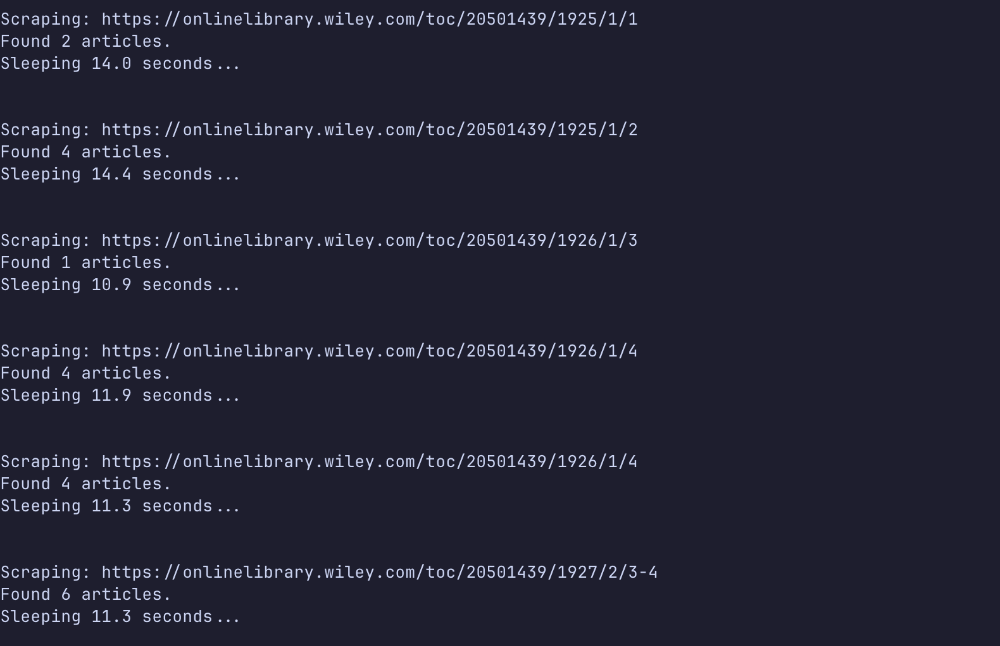
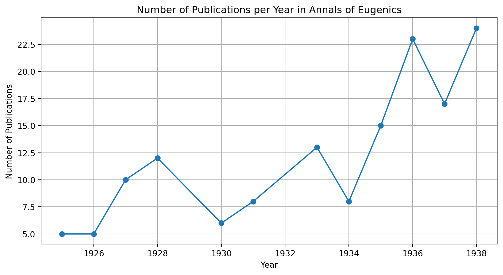
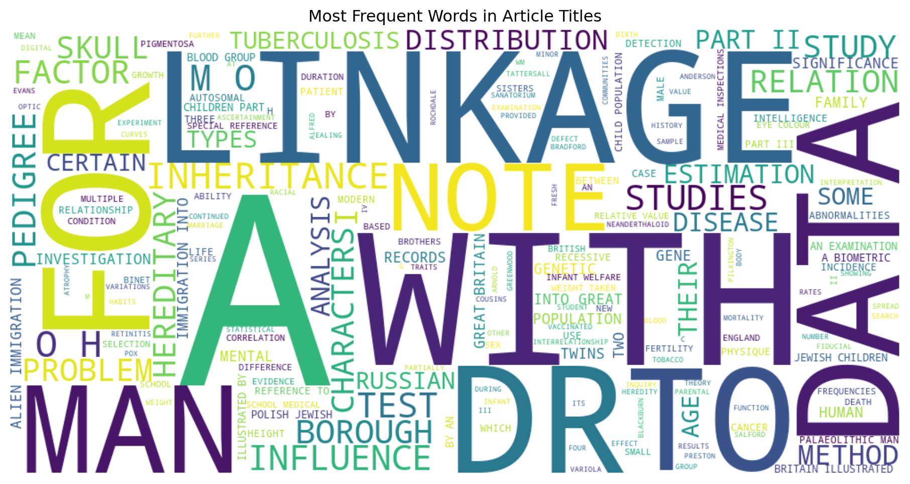
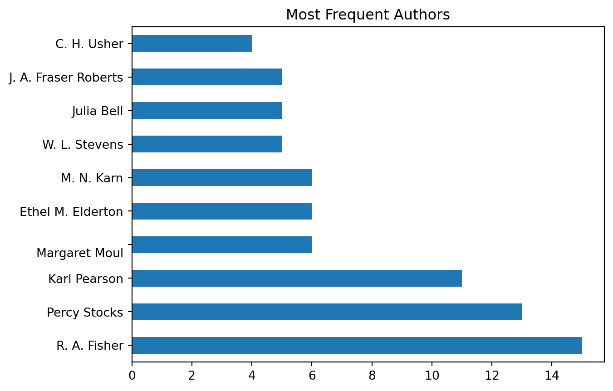

Packages Used (expand to view code)
import pandas as pd
import matplotlib.pyplot as plt
from wordcloud import WordCloudThese are graphs exploring the Annals of Eugenics and its articles, namely:
How many articles were published each year;
Most frequent key words in article titles;
Most published authors in the journal.
This is part of a larger project about the history of Eugenics at my college (The College of Idaho), in my state (Idaho), and in academia as a whole. Exploring the Annals of Eugenics was a way to see the type of work that was being published during its tenure (at least before it was renamed to the Annals of Human Genetics in 1954).
This dataset is self made! I made a spreadsheet keeping track of the titles and authors of articles across years, volumes, and issues.
I scraped the data directly from the journal online. :)

TBD
import pandas as pd
import matplotlib.pyplot as plt
from wordcloud import WordClouddf = pd.read_csv("data/annals-of-eugenics-v1.csv")from tabulate import tabulate
print(tabulate(df.head(), headers='keys', tablefmt='github'))| | Year | Volume | Issue | Title | Author(s) | Author Title | Unnamed: 6 | Notes |
|----|--------|----------|---------|--------------------------------------------------------------------------------------------------------------------------------------------------------------------------------------------------------------------------------------------------------------------------------------------------------|-------------------|----------------|--------------|--------------------------------------------------------------------------------------------------------|
| 0 | 1925 | 1 | 1 | THE PROBLEM OF ALIEN IMMIGRATION INTO GREAT BRITAIN, ILLUSTRATED BY AN EXAMINATION OF RUSSIAN AND POLISH JEWISH CHILDREN. PART I. | Karl Pearson;
Margaret Moul | nan | nan | *Removed a handful of German titles. (currently 3) |
| 1 | 1925 | 1 | 2 | THE PROBLEM OF ALIEN IMMIGRATION INTO GREAT BRITAIN, ILLUSTRATED BY AN EXAMINATION OF RUSSIAN AND POLISH JEWISH CHILDREN. PART II. | Karl Pearson;
Margaret Moul | nan | nan | *Considering putting academic titles in a separate column so it's easier to discern different authors. |
| 2 | 1925 | 1 | 2 | A PEDIGREE OF EPICANTHUS AND PTOSIS. | C. H. Usher | M.B. | nan | *I didn't differentiate by issue as I thought year and volume were enough, but I can change that |
| 3 | 1925 | 1 | 2 | ON THE RELATIVE VALUE OF THE FACTORS WHICH INFLUENCE INFANT WELFARE … BASED ON DATA PROVIDED BY DR A. G. ANDERSON, (M.O.H. ROCHDALE), DR WM. ARNOLD EVANS, (M.O.H. BRADFORD), DR ALFRED GREENWOOD, (M.O.H. BLACKBURN), DR H. O. PILKINGTON, (M.O.H. PRESTON) AND DR C. H. TATTERSALL, (M.O.H. SALFORD) | Ethel M. Elderton | nan | nan | Round 1: 1925-1935 // Round 2: 1936-1945 // Round 3: 1946-1953 |
| 4 | 1925 | 1 | 2 | A NOTE ON THE CORRELATION BETWEEN BIRTH- AND DEATH-RATES WITH REFERENCE TO MALTHUS'S INTERPRETATION OF THEIR MOVEMENTS. | Anthony B. Hill | Ph.D. | nan | Source: https://onlinebooks.library.upenn.edu/webbin/serial?id=annalseugenics |counts = df['Year'].value_counts().sort_index()
plt.figure(figsize=(10,5))
plt.plot(counts.index, counts.values, marker='o')
plt.title("Number of Publications per Year in Annals of Eugenics")
plt.xlabel("Year")
plt.ylabel("Number of Publications")
plt.grid(True)
plt.show()
text = " ".join(df['Title'].dropna())
wc = WordCloud(width=1000, height=500,
background_color='white',
stopwords={'the', 'of', 'and', 'on', 'in'}).generate(text)
plt.figure(figsize=(12,6))
plt.imshow(wc, interpolation='bilinear')
plt.axis('off')
plt.title("Most Frequent Words in Article Titles")
plt.show()
authors = df['Author(s)'].dropna().str.split(';', expand=True).stack()
authors.value_counts().head(10).plot(kind='barh')
plt.title("Most Frequent Authors")
plt.show()
Making the spreadsheet took a minute, but that’s what happens when you make your own dataset. It probably would have been easier to scrape the data, but that felt like it would’ve taken more time to set up and figure out, and inserting all of this information in a spreadsheet was a decent way to pass time.
I scraped the data!!!! But this also means having to… clean it.
¯\_(ツ)_/¯ TBD